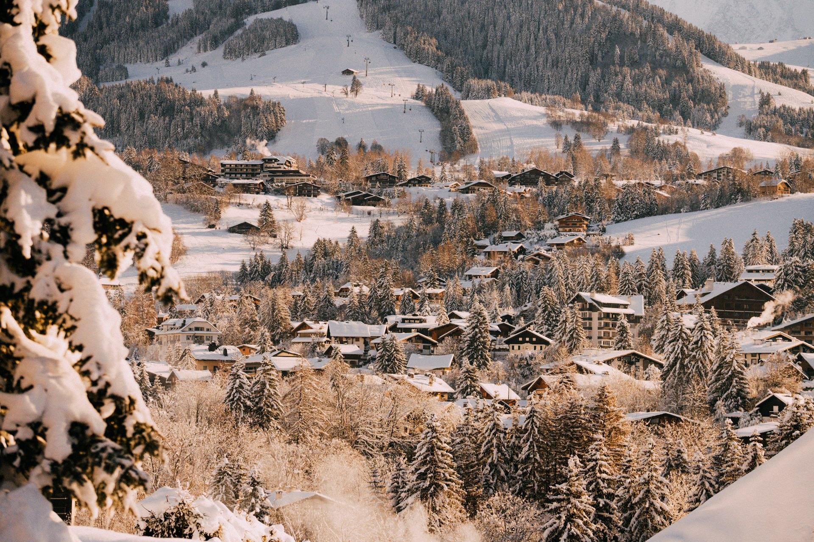

Christmas holidays 2026 in France: dates and where to go
From Saturday 19 December 2026 to Monday 4 January 2027: skiing, Christmas markets, New Year’s Eve or sunshine, our holiday calendar.
Photo: Mat Napo / Unsplash
The French Christmas school holidays run from Saturday 19 December 2026 to Monday 4 January 2027, on the same dates across France. Skiing, Christmas markets, New Year’s Eve in Paris or sunshine on the Riviera: here is the holiday calendar and our ideas to make the most of it, each with a link to our detailed guide.
The holiday calendar
- 19 DecChristmas school holidays begin
For all three zones and Corsica, until Monday 4 January 2027 (back to school).
- 19 DecMegève and La Grave open
On the first day of the holidays. Val Thorens, Tignes, Courchevel and Alpe d’Huez have been open since late November or early December.
- 20 DecRiquewihr and Kaysersberg close
Only the first weekend of the holidays lets you see them.
- 24 DecLast day of the Strasbourg market
The Christkindelsmärik on Place Broglie closes on Christmas Eve.
- 29 DecColmar markets end
The food market and the big wheel stay until 3 January 2027.
- 31 DecNew Year’s Eve
A Thursday night: free fireworks on the Champs-Élysées at midnight, dinners on the Seine, celebrations in Nice.
- 3 JanNice, Cannes, Monaco and Tuileries markets end
The Champs-Élysées market runs until 4 January 2027.
Our ideas for the Christmas holidays
Go skiing
During the Christmas holidays, the big resorts in the Alps and the Pyrenees are open. The highest ones, such as Val Thorens and Tignes, are the safest bet for snow. It is also the most expensive period: see our comparison of 2026-2027 lift pass prices.
Visit the Christmas markets
Check the dates: in Alsace, Riquewihr and Kaysersberg close on 20 December and Strasbourg on the 24th. For the whole holiday, Paris, Nice, Cannes and Monaco stay open, until 3 or 4 January 2027.
Celebrate New Year’s Eve
The free fireworks on the Champs-Élysées, a dinner cruise on the Seine or a seaside party in Nice.
Find the sun on the French Riviera
Seaside walks, hilltop villages without the crowds and the Christmas villages of Nice, Cannes and Monaco, easy to link by train.
Enjoy Paris in winter
Lights, ice rinks and museums: our pick for the short days of December.
Our tips
- Book your trains early: the first and last days of the holidays are the busiest.
- On the slopes, both weeks are peak season: book accommodation and equipment now.
- For the Alsace markets, go on the first weekend of the holidays.
Holiday dates: decree of 22 October 2025 (Journal officiel, 23 October 2025). Other dates checked in November 2026; check before you go.
Our holiday guides


Tours and activities
Two ideas to book for the Christmas holidays.
-
Ski lessons and activities in the Alps
Instructors, off-piste outings and snowshoeing.
-
Seine dinner cruises
Meals on board, from simple menus to fine dining.
Partner links.
Want to give an outing for the holidays? See our experience gift ideas for Christmas.
In Paris over the holidays, see the museums and monuments open on 25 December and 1 January.
And after the holidays? See where to go in France in January 2027.
Frequently asked questions
What are the French Christmas school holiday dates in 2026?
From Saturday 19 December 2026 to Monday 4 January 2027, when school resumes. The dates are the same for zones A, B and C and for Corsica.
Which Christmas markets are open during the holidays?
Paris (Tuileries until 3 January, Champs-Élysées until 4 January), Nice, Cannes and Monaco until 3 January 2027, Colmar until 29 December and Strasbourg until 24 December. Riquewihr and Kaysersberg close on 20 December.
Are ski resorts open for the Christmas holidays?
Yes: the big resorts open between late November and 19 December. Megève (full opening) and La Grave open on 19 December, the first day of the holidays. Everything depends on snow conditions.